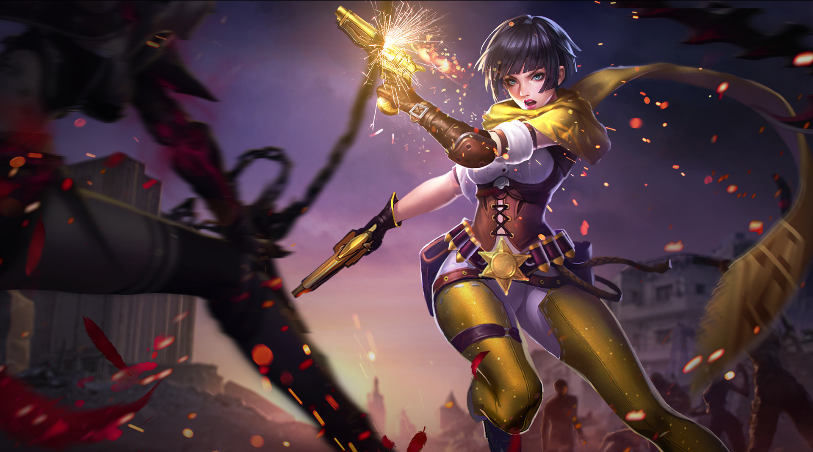

VIOLET
Tiểu sử
"Những phát bắn của ta luôn nhắc nhở mọi người về thời kỳ khủng khiếp dưới ách thống trị của Hắc Ám".
Xuyên suốt cuộc Chiến Tranh Chạng Vạng, bóng hồng Violet nổi lên như một thợ săn dòng giống ác quỷ với cái tên Thái tử. Sức mạnh của những con quỷ dần trở nên không thể kiểm soát, không đơn thuần sử dụng móng vuốt và răng nanh như trước đây nữa, ma cà rồng thuộc chủng loại mới có tên là Thái Tử giờ đây có thể sử dụng phép thuật để tạo ra các vụ nổ, sấm sét hay thậm chí là bay lượn. Kĩ năng của Violet mang tới cho cô những lợi thế lớn không dễ bị áp đảo. Chỉ có những người giống Violet, những người đã trải qua quá trình huấn luyện khắc nghiệt, mới có thể đối đầu với những thế lực phi tự nhiên và ma thuật của chúng.
Đồng loại bị tiêu diệt càng nhiều, lũ ma cà rồng càng căm hận Violet. Chúng liên tục tìm cách tiêu diệt lực lượng của cô. Liên tục phải phòng ngự trước những đợt tấn công đến từ kẻ thù, khẩu súng thân tín “Hoa Hồng Định Mệnh” của Violet cũng bị phá hủy.
Mất cặp súng trên tay và nhìn thấy bạn bè mình từng người một ngã xuống, Violet gào lên giận giữ và thề rằng sẽ tận diệt ma cà rồng đến tận hơi thở cuối cùng, cho dù không còn tấc sắt trên tay.
“Ma cà rồng săn đuổi chúng ta, chúng ta săn đuổi lại ma cà rồng!”
Xuyên suốt cuộc Chiến Tranh Chạng Vạng, bóng hồng Violet nổi lên như một thợ săn dòng giống ác quỷ với cái tên Thái tử. Sức mạnh của những con quỷ dần trở nên không thể kiểm soát, không đơn thuần sử dụng móng vuốt và răng nanh như trước đây nữa, ma cà rồng thuộc chủng loại mới có tên là Thái Tử giờ đây có thể sử dụng phép thuật để tạo ra các vụ nổ, sấm sét hay thậm chí là bay lượn. Kĩ năng của Violet mang tới cho cô những lợi thế lớn không dễ bị áp đảo. Chỉ có những người giống Violet, những người đã trải qua quá trình huấn luyện khắc nghiệt, mới có thể đối đầu với những thế lực phi tự nhiên và ma thuật của chúng.
Đồng loại bị tiêu diệt càng nhiều, lũ ma cà rồng càng căm hận Violet. Chúng liên tục tìm cách tiêu diệt lực lượng của cô. Liên tục phải phòng ngự trước những đợt tấn công đến từ kẻ thù, khẩu súng thân tín “Hoa Hồng Định Mệnh” của Violet cũng bị phá hủy.
Mất cặp súng trên tay và nhìn thấy bạn bè mình từng người một ngã xuống, Violet gào lên giận giữ và thề rằng sẽ tận diệt ma cà rồng đến tận hơi thở cuối cùng, cho dù không còn tấc sắt trên tay.
“Ma cà rồng săn đuổi chúng ta, chúng ta săn đuổi lại ma cà rồng!”
CÔNG TY CỔ PHẦN GIẢI TRÍ VÀ THỂ THAO ĐIỆN TỬ VIỆT NAM
Văn phòng đại diện: Tầng 29, tòa nhà Trung tâm Lotte Hà Nội, số 54, đường Liễu Giai, Phường Cống Vị, Quận Ba Đình,
Thành phố Hà Nội, Việt Nam
Điện thoại: (04)7305-3939 | Fax: (04)3759-2429